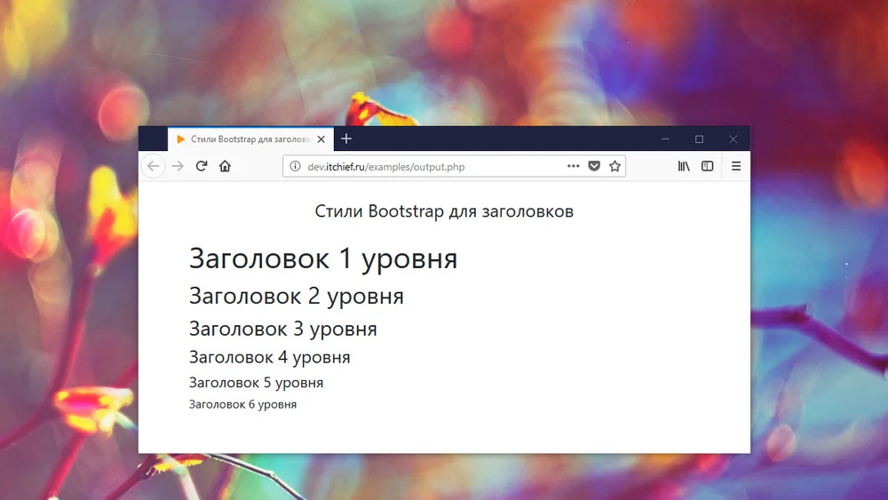

Типографика в Bootstrap 5
Работа с типографикой в Bootstrap
 В Bootstrap 5 по умолчанию используется значение font-size в 1rem (по умолчанию 16
пикселей), а значение line-height равно 1,5.
Кроме того, все <p> элементы имеют значения
margin-top: 0 и margin-bottom: 1rem (по умолчанию 16
пикселей).
<h1> — <h6>
Заголовки HTML в Bootstrap 5 (от <h1> до
<h6>) с более жирным шрифтом и адаптивным
размером шрифта.
Пример
<h1>h1 Bootstrap heading</h1>
<h2>h2 Bootstrap heading</h2>
<h3>h3 Bootstrap heading</h3>
<h4>h4 Bootstrap heading</h4>
<h5>h5 Bootstrap heading</h5>
<h6>h6 Bootstrap heading</h6>
h1 Bootstrap heading
h2 Bootstrap heading
h3 Bootstrap heading
h4 Bootstrap heading
h5 Bootstrap heading
h6 Bootstrap heading
end.
Вы также можете использовать .h1 для .h6 классов
других элементов, чтобы они вели себя как заголовки, если хотите:
Пример
<p class="h1">заголовок начальной загрузки h1</p>
<p class="h2">заголовок начальной загрузки h2</p>
<p class="h3">заголовок начальной загрузки h3</p>
<p class="h4">заголовок начальной загрузки h4</p>
<p class="h5">заголовок начальной загрузки h5</p>
<p class="h6">заголовок начальной загрузки h6</p>
заголовок начальной загрузки h1
заголовок начальной загрузки h2
заголовок начальной загрузки h3
заголовок начальной загрузки h4
заголовок начальной загрузки h5
заголовок начальной загрузки h6
end.
Отображаемые заголовки
Отображаемые заголовки выделяются сильнее, чем обычные (более крупный шрифт и менее
насыщенная текстура), и на выбор
предлагается шесть классов: .display-1 — .display-6:
Пример
<div class="display-1">.display-1</div>
<div class="display-2">.display-2</div>
<div class="display-3">.display-3</div>
<div class="display-4">.display-4</div>
<div class="display-5">.display-5</div>
<div class="display-6">.display-6</div>
.display-1
.display-2
.display-3
.display-4
.display-5
.display-6
end.
<small>
В Bootstrap 5 элемент HTML <small> (и класс
.small ) используется для создания дополнительного
текста меньшего размера в любом
заголовке.
Пример
<div class="container mt-3">
<h1>Smaller, Secondary Text</h1>
<p>The small element (and the .small class) is used to
create a smaller, secondary text in any heading:</p>
<h1>h1 heading <small>secondary text</small></h1>
<h2>h2 heading <small>secondary text</small></h2>
<h3>h3 heading <small>secondary text</small></h3>
<h4>h4 heading <small>secondary text</small></h4>
<h5>h5 heading <small>secondary text</small></h5>
<h6>h6 heading <small>secondary text</small></h6>
</div>
h1 heading secondary text
h2 heading secondary text
h3 heading secondary text
h4 heading secondary text
h5 heading secondary text
h6 heading secondary text
end.
<mark>
Bootstrap 5 будет стилизовать тег mark и класс .mark отступом:
Пример
Используйте элемент mark, чтобы <mark style="background-color:#eff309;padding:.2em;">выделить</mark> текст.
Используйте элемент mark, чтобы выделить текст.
end.
<abbr>
Bootstrap 5 стилизует элемент HTML <abbr>
пунктирной нижней границей и
курсором со знаком вопроса при наведении:
Пример
<abbr title="Всемирная Организация здравоохранения"
style="cursor: help;">ВОЗ</abbr> была основана в 1948 году.
ВОЗ была основана в 1948 году.
end.
<blockquote>
Добавьте класс .blockquote к <blockquote>
при цитировании блоков контента из другого источника. А при указании источника,
например «с сайта WWF», используйте
класс .blockquote-footer:
Пример
<div class="container-fluid mt-2">
<blockquote class="blockquote">
<For 50 years, WWF has been protecting the future of nature.
The world's leading conservation organization,
WWF works in 100 countries and is supported by
1.2 million members in the United States and close to 5
million globally.
<footer class="blockquote-footer">From WWF's website</footer>
</blockquote>
</div>
For 50 years, WWF has been protecting the future of nature.
The world's leading conservation organization, WWF works in 100
countries and is supported by 1.2 million members in the
United States and close to 5million globally.
end.
<dl>
Bootstrap 5 будет стилизовать элемент HTML <dl> следующим образом: